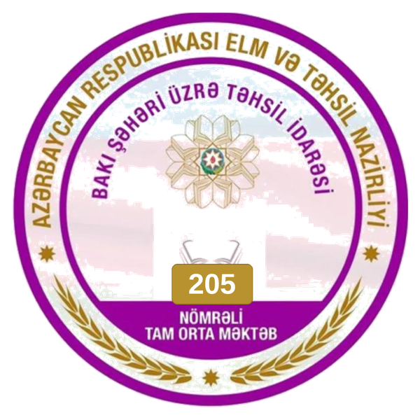
Binəqədi rayonu Rövşən İmanov adına 205 nömrəli tam orta ümumtəhsil məktəbi 1930-cu ildən fəaliyyət göstərir.
Məktəb Azərbaycanın Milli Qəhrəmanı Rövşən İmanovun adını daşıyır.
Azərbaycan Respublikasının Prezidenti İlham Əliyevin 2019-cu il 15 yanvar tarixli Sərəncamına uyğun olaraq "Bakı şəhərinin və onun qəsəbələrinin sosial-iqtisadi inkişafına dair Dövlət Proqramı"na əsasən məktəb sökülərək yenidən tikilib.
İki korpus və hər korpusda 4 mərtəbə olmaqla 960 şagird tutumlu məktəb inşa edilib. Məktəb 22 sentyabr 2021-ci il tarixində müəllim və şagirdlərin istifadəsinə verilib.
Məktəb 5 günlük iş rejimi ilə 2 növbədə fəaliyyət göstərir. Hazırkı 2025-2026-cı il tədris ilində məktəbdə təhsil alan 1425 şagirdin təlim-tərbiyəsi ilə 79 müəllim məşğul olur.
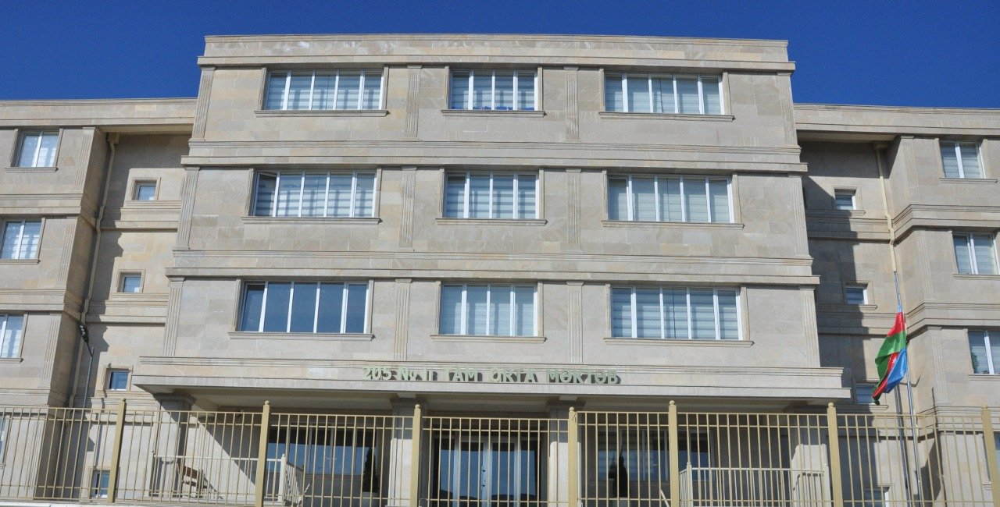
Təhsil ocağında 56 sinif otağı, müasir tələblərə cavab verən fənn laboratoriyaları, fənn kabinetləri, informatika, STEAM və rəqəmsal bacarıqlar kabinetləri, akt zalı, idman zalı, bufet, idman meydançası, tibb kabineti, inzibati heyət otaqları və hərbi kabinet mövcuddur. Məktəb lazımi avadanlıqlarla və kompüterlərlə təmin olunub.
Hər il məktəbin şagirdləri müxtəlif müsabiqələr, fənn olimpiadaları, intellektual yarışlar, hərbi-idman və idman yarışlarında iştirak edərək nailiyyətlər əldə ediblər. 2024-2025-ci tədris ilində məktəbin XI sinfini 115 məzun bitirib. Onlardan 55 nəfəri müxtəlif ali təhsil ocaqlarına qəbul olunub. 3 məzunumuz qəbul imtahanında 600 baldan yuxarı nəticə göstərib.
Məktəbdə STEAM və Rəqəmsal bacarıqlar layihəsi üzrə dərslər keçirilir. 205 nömrəli tam orta məktəb "Təhsildə İnkişaf və İnnovasiyalar üzrə Qrant Müsabiqəsi"nin qalibi olub. Bundan başqa məktəbin rəsmi saytı 2021-2022-ci tədris ilində paytaxtın ümumi təhsil müəssisələri arasında təşkil olunmuş "Ən yaxşı məktəb saytı" müsabiqəsinin də qalibi olub.
Məktəbimizdə sağlam və təhlükəsiz psixoloji mühitin formalaşdırılması məqsədilə Bullinqə Qarşı Mübarizə Şurası yaradılmışdır. Şura müəllimlər və şagirdlərdən ibarət üzvlərdən təşkil olunmuşdur ki, bu da məktəbdə birgə əməkdaşlıq və qarşılıqlı məsuliyyət prinsipini gücləndirir.
Şuranın əsas məqsədi bullinq hallarının qarşısının alınması, erkən aşkar edilməsi və profilaktik tədbirlərin həyata keçirilməsidir.
Bununla yanaşı, şagirdlər arasında qarşılıqlı hörmət, tolerantlıq və empatiya dəyərlərinin təşviqi istiqamətində maarifləndirici görüşlər, sorğular və müzakirələr təşkil ediləcək. Valideynlər və pedaqoji heyətlə əməkdaşlıq edərək təhlükəsiz məktəb mühitinin qorunmasına xidmət edəcək. Məqsədimiz hər bir şagirdin özünü məktəbdə güvənli, dəyərli və rahat hiss etməsini təmin etməkdir.
Məktəbimizdə fəaliyyət göstərən Kiçik Akademiya bu tədris ilində də uğurla davam edir. Akademiya şagirdlərin elmi potensialını üzə çıxarmağa və tədqiqat bacarıqlarını inkişaf etdirməyə kömək edir.
Şagirdlər müxtəlif fənlər üzrə araşdırmalar aparır, layihələr hazırlayır və təqdimatlar edirlər. Bu fəaliyyət onların analitik düşünmə və müstəqil işləmə bacarıqlarını gücləndirir. Kiçik Akademiyanın məqsədi elmi düşüncəli, yaradıcı və təşəbbüskar gənclər yetişdirməkdir.
Rövşən İmanov adına 205 nömrəli tam orta ümumtəhsil məktəbində şagirdlər arasında internet təhlükəsizliyi və rəqəmsal savadlılığın artırılması məqsədilə "Zərərli informasiya və təhlükəli oyunlardan özümüzü qoruyaq" mövzusunda bir sıra maarifləndirici dərslər keçirilmişdir.
Tədbirlər Bullinqlə Mübarizə Şurası və Sosial-Psixoloji Dəstək Komissiyasının təşəbbüsü ilə müxtəlif siniflərdə təşkil olunmuş, şagirdlərə internetdə rastlaşa biləcəkləri zərərli məzmun, şübhəli linklər və təhlükəli onlayn oyunların mümkün riskləri barədə ətraflı məlumat verilmişdir.
Dərslər zamanı şagirdlərə naməlum şəxslərlə ünsiyyətdə ehtiyatlı olmaq, şəxsi məlumatları paylaşmamaq və şübhəli hallarda dərhal valideynlərinə və ya müəllimlərinə müraciət etmək tövsiyə olunmuşdur. Eyni zamanda kiberbullinqin əlamətləri və ona qarşı necə mübarizə aparmaq barədə də izahat verilmişdir.
Tədbirin sonunda şagirdlər arasında maraqlı fikir mübadiləsi aparılmış, mövzu ilə bağlı suallar cavablandırılmışdır. Məktəb rəhbərliyi bu kimi maarifləndirici tədbirlərin davamlı xarakter daşımasının vacibliyini vurğulamışdır.
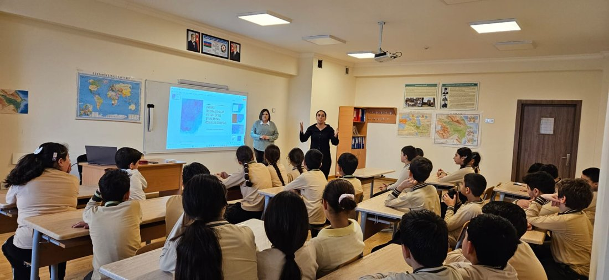
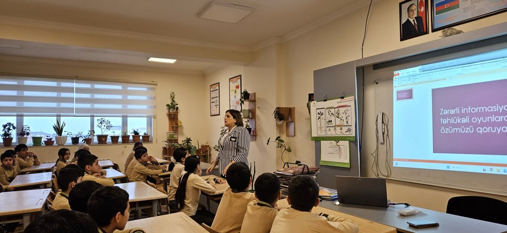
Rövşən İmanov adına 205 nömrəli tam orta ümumtəhsil məktəbində "Narkotiklərə yox deyirik!" mövzusunda geniş maarifləndirici tədbir keçirilmişdir.
Tədbirin əsas məqsədi yeniyetmə və gənclər arasında narkomaniyanın fəsadları barədə maarifləndirmə işinin gücləndirilməsi, onların zərərli vərdişlərdən uzaq tutulması və sağlam həyat tərzinin təbliğ olunmasıdır.
Tədbirdə polis əməkdaşları, məktəbin pedaqoji kollektivi, valideynlər və şagirdlər iştirak etmişlər. Çıxışlar zamanı narkomaniyanın insan sağlamlığına, ailəyə və cəmiyyətə vurduğu ciddi zərərlər barədə məlumat verilmişdir.
Tədbirin əsas hissəsində məktəbin istedadlı şagirdi Turan Rafikov baş rolda çıxış edərək narkomaniyanın insan həyatına və ailəyə vurduğu ağır fəsadları əks etdirən təsirli maarifləndirici tamaşa nümayiş etdirmişdir.
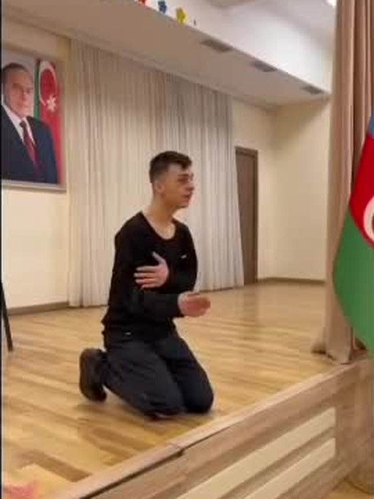
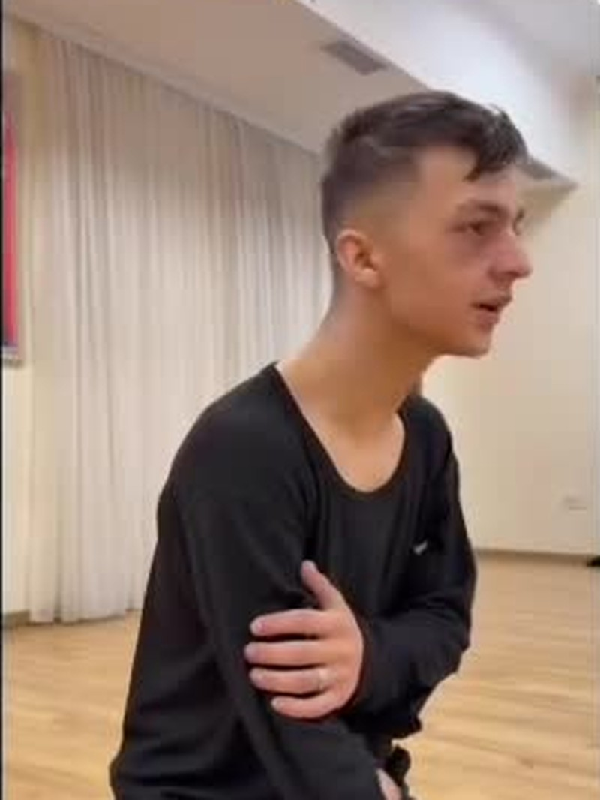
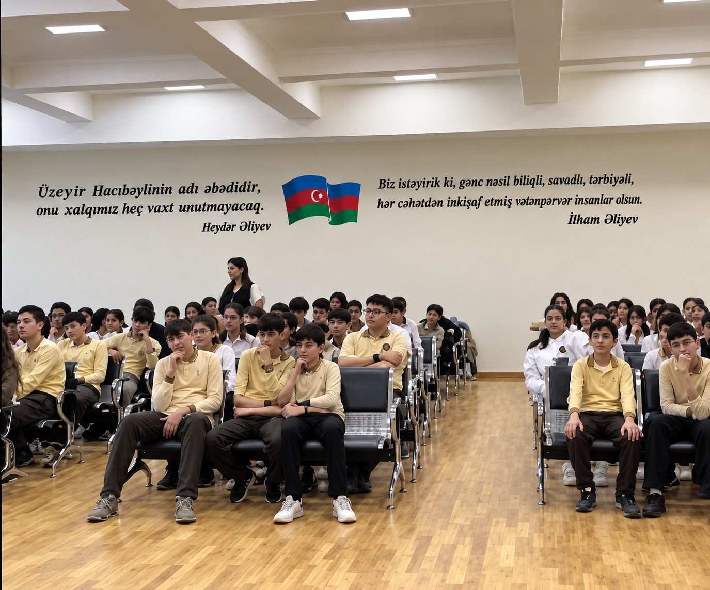
1 İyun – Uşaqların Beynəlxalq Müdafiəsi Günü münasibətilə məktəbimizdə rəngarəng və yaddaqalan tədbir keçirildi.
Tədbir Azərbaycan Respublikasının Dövlət Himninin səsləndirilməsi ilə başladı. Daha sonra şagirdlərimizin hazırladığı maraqlı rəqs nömrələri və səhnəciklər bayram ab-havasını daha da yüksəltdi.
Günün ən maraqlı məqamlarından biri isə şagirdlərin təqdim etdiyi "Tıq-Tıq xanım" tamaşası oldu. Tamaşa izləyicilər tərəfindən böyük maraqla qarşılandı.
Tədbirin sonunda məktəbin direktoru Əliheydər Əlifli çıxış edərək bütün uşaqları bayram münasibətilə təbrik etdi, onlara uğurlar və xoşbəxt gələcək arzuladı.
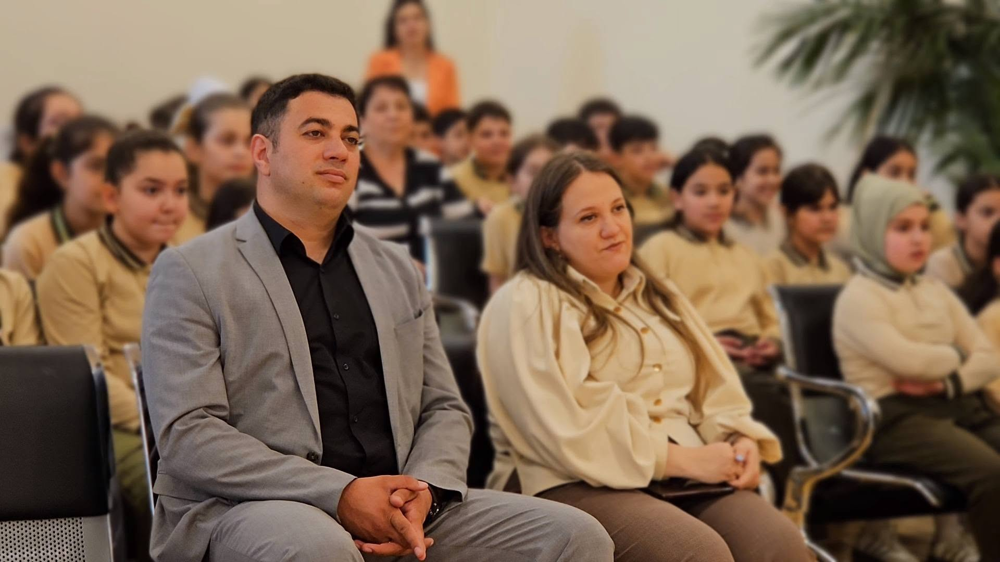
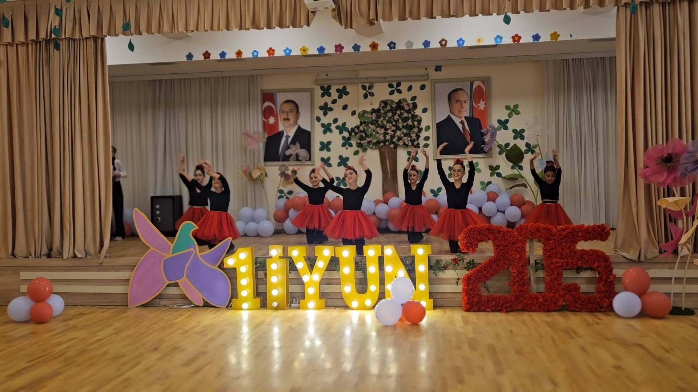
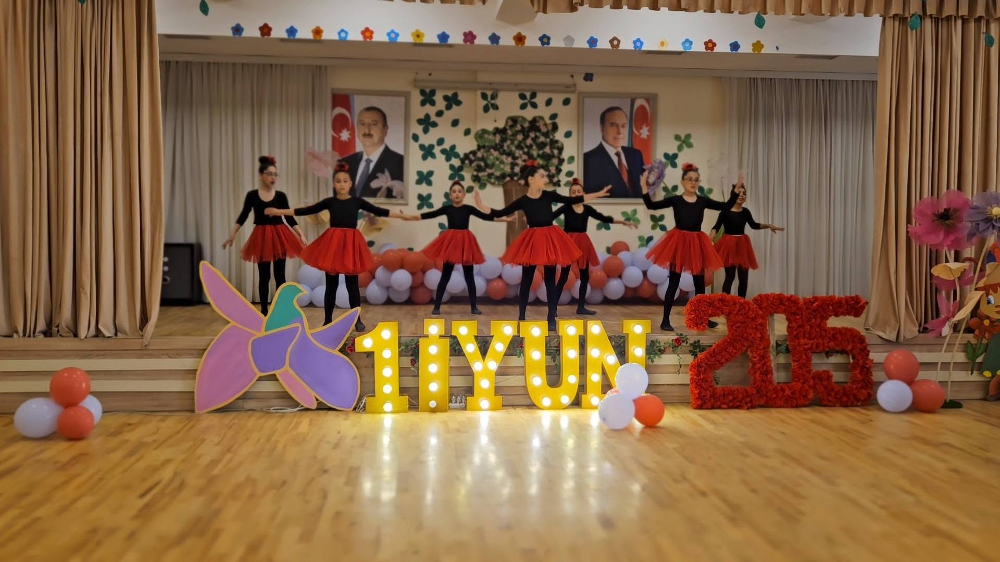
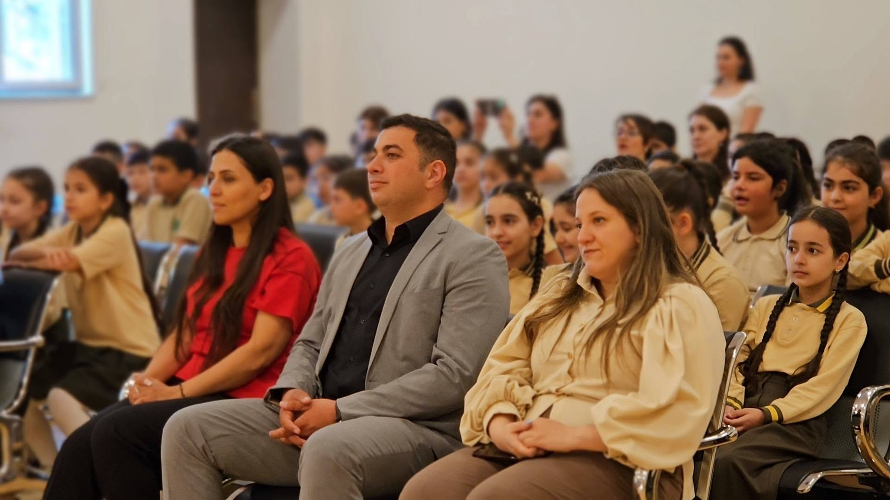
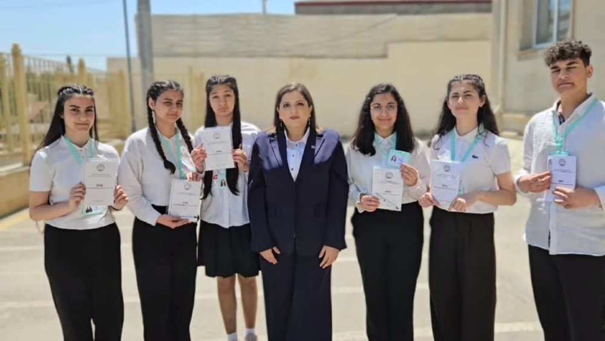
Məktəbdə şagirdlər arasında sağlam, təhlükəsiz və qarşılıqlı hörmətə əsaslanan münasibətlərin formalaşdırılması, bullinq hallarının qarşısının alınması və şagirdlərin sosial-psixoloji rifahının dəstəklənməsi məqsədilə 6 nəfər fəal şagirddən ibarət Bullinqlə Mübarizə Şurası və Sosial-Psixoloji Dəstək Komissiyası yaradılmışdır.
Komissiyanın üzvləri məktəbin ictimai həyatında fəal iştirak edən, məsuliyyətli, ünsiyyət bacarığı yüksək və həmyaşıdları arasında müsbət nüfuza malik şagirdlərdən seçilmişdir.
Şagirdlərin əsas fəaliyyət istiqamətləri:
Görülmüş işlər. Komissiya üzvləri tərəfindən şagirdlər arasında bullinqə qarşı maarifləndirici söhbətlər və məlumatlandırıcı görüşlər keçirilmiş, bullinqin qarşısının alınması ilə bağlı şagirdlərin fikirləri öyrənilmişdir. Şagirdlər arasında dostluq, həmrəylik və qarşılıqlı hörmətin təşviqi məqsədilə müxtəlif sosial təşəbbüslərdə iştirak edilmişdir.
Komissiya üzvləri həmçinin siniflərdə müşahidə olunan sosial münasibətlərə diqqət yetirmiş, ehtiyac yarandıqda problemlərin məktəbin psixoloqu və müəllimləri ilə əməkdaşlıq çərçivəsində həllinə dəstək olmuşlar.
Nəticə. Bullinqlə Mübarizə Şurası və Sosial-Psixoloji Dəstək Komissiyasının fəaliyyəti şagirdlərin məktəb həyatında daha fəal iştirakına, problemlərin vaxtında müəyyənləşdirilməsinə, həmyaşıdlar arasında qarşılıqlı dəstək və hörmət mühitinin gücləndirilməsinə xidmət edir.
Komissiyanın fəaliyyətinə məktəb psixoloqları Aytən Məmmədova və Zülfiyyə Məsimova metodiki dəstək göstərir; məktəb direktoru Əliheydər Əlifli komissiya üzvlərinin təşəbbüskar fəaliyyətini yüksək qiymətləndirmişdir.
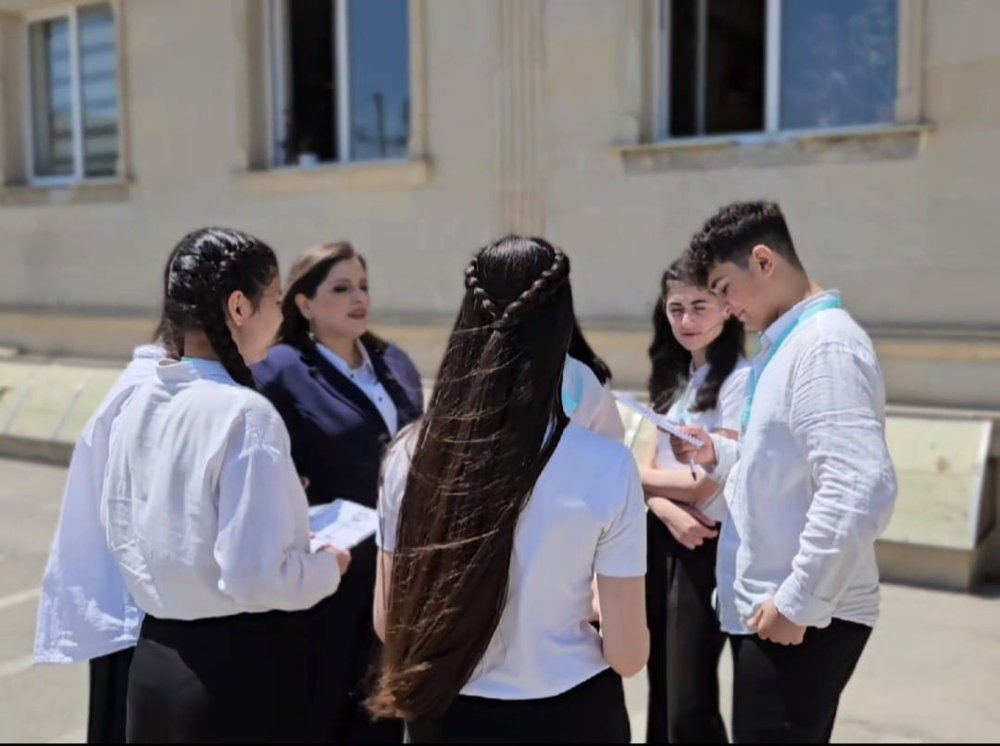
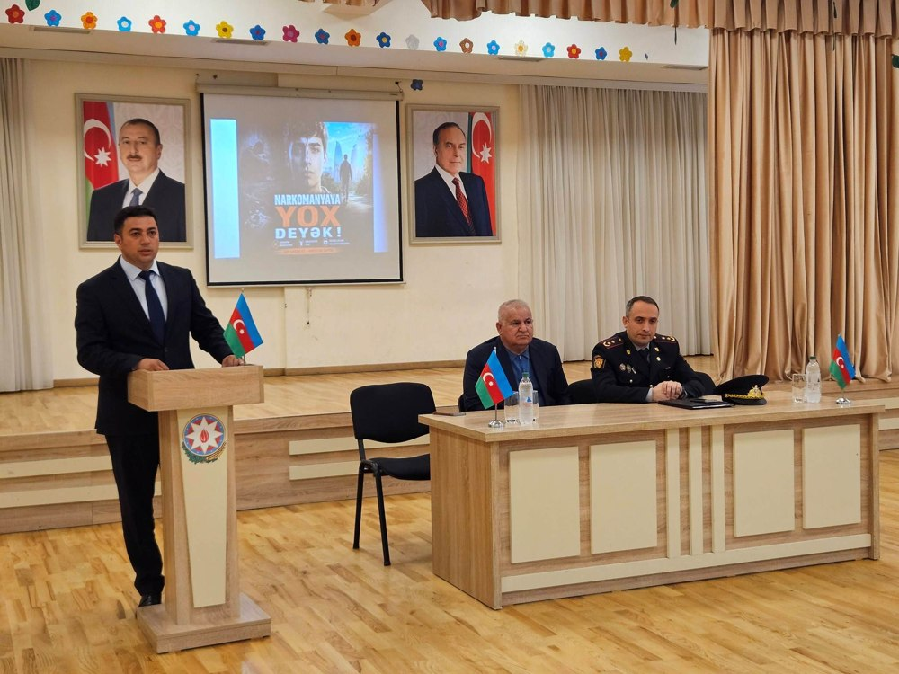
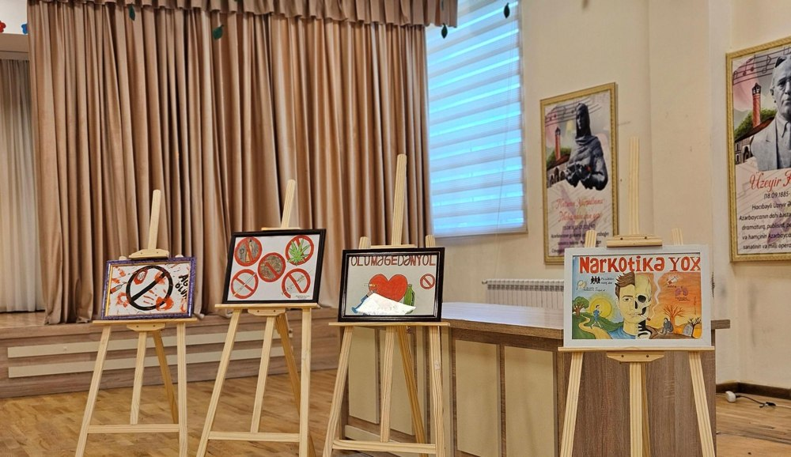
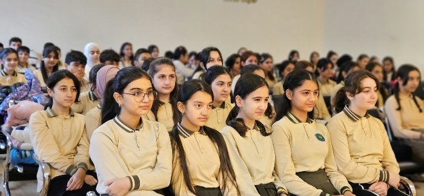
Məktəbdə sağlam həyat tərzinin təbliği, zərərli vərdişlərə qarşı maarifləndirmə işinin gücləndirilməsi və narkomaniyanın cəmiyyətə vurduğu zərərlər barədə şagirdlərin məlumatlılığının artırılması məqsədilə "Narkomaniyaya yox deyək" mövzusunda rəsm sərgisi təşkil edilmişdir. Tədbirin keçirilməsində əsas məqsəd şagirdlər arasında sağlam həyat tərzinin təşviqi, zərərli vərdişlərdən uzaq durmağın vacibliyinin izah olunması və onların yaradıcılıq qabiliyyətlərinin inkişaf etdirilməsidir.
Məktəb direktoru Əliheydər Əlifli və UBTR [Ad Soyad]-nın təşkilatçılığı ilə keçirilən bu sərgidə şagirdlər narkomaniyanın mənfi təsirlərini, sağlam həyat tərzinin üstünlüklərini və düzgün həyat seçiminin əhəmiyyətini əks etdirən müxtəlif rəsmlər təqdim etmişlər. Rəsmlərdə sağlam gələcək, güclü iradə, idman və düzgün həyat tərzinin insan həyatında rolu yaradıcı şəkildə ifadə olunmuşdur.
Sərgidə təqdim olunan rəsm işləri məktəb rəhbərliyi və təsviri incəsənət müəllimlərindən ibarət komissiya tərəfindən xüsusi meyarlar əsasında qiymətləndirilmişdir. Qiymətləndirmə zamanı rəsmlərin mövzuya uyğunluğu, yaradıcılıq səviyyəsi, ideyanın düzgün ifa olunması və bədii tərtibatı nəzərə alınmışdır.
Münsiflər heyətinin qərarına əsasən ən yaxşı rəsm işləri seçilmiş və fərqlənən şagirdlər məktəbin direktoru Əliheydər Əlifli tərəfindən "Diplom"la mükafatlandırılmışdır. Belə tədbirlərin keçirilməsi şagirdlərin zərərli vərdişlərdən uzaq durmasına, sağlam düşüncə tərzinin formalaşmasına və cəmiyyət üçün faydalı, məsuliyyətli və sağlam gənclər yetişməsinə mühüm töhfə verir. Məktəb rəhbərliyi gələcəkdə də bu kimi maarifləndirici və yaradıcı tədbirlərin davam etdirilməsini planlaşdırır. Meyarlara uyğun və fərqlənən rəsm əsərlərinin müəllifi olan şagirdlər "Diplom"larla təltif olunmuş, onların yaradıcılıq fəaliyyəti yüksək qiymətləndirilmişdir. Təltif olunan şagirdlərə gələcəkdə də bu kimi tədbirlərdə fəal iştirak etmələri və yaradıcılıqlarını davam etdirmələri tövsiyə olunmuşdur.
Komissiyanın məqsədi və fəaliyyət istiqamətləri: İnformasiya və Maarifləndirmə Komissiyası məktəbdaxili informasiya mübadiləsinin sistemli və məqsədyönlü şəkildə təşkili, şagirdlərin aktual mövzular üzrə məlumatlandırılması və maarifləndirilməsi məqsədilə fəaliyyət göstərir.
Komissiyanın əsas hədəfi şagirdlərdə sosial məsuliyyət, hüquqi və etik davranış, sağlam həyat tərzi, təhlükəsizlik qaydaları və məktəb mühitində müsbət psixoloji iqlimin formalaşdırılmasına dəstək olmaqdır.
Komissiya müxtəlif tematik təqdimatlar, maarifləndirici söhbətlər, sorğular, poster və bukletlərin hazırlanması, sosial aksiyaların təşkili vasitəsilə şagirdlərin məlumatlılıq səviyyəsinin artırılmasına xidmət edir. Eyni zamanda məktəbin digər komissiyaları və pedaqoji heyəti ilə əməkdaşlıq çərçivəsində informasiya idarəetməsinin koordinasiyalı şəkildə həyata keçirilməsini təmin edir.
Fəaliyyət prosesində şagirdlərin təşəbbüskarlığı, liderlik bacarıqları və komanda şəklində işləmə vərdişləri inkişaf etdirilir, onların ictimai fəallığının artırılması istiqamətində sistemli iş aparılır.
Təhlükəsizlik Nəzarət Komissiyası məktəbdə təhlükəsizlik qaydalarına əməl olunmasına nəzarət, şagirdlərin təhlükəsiz və sağlam mühitdə təhsil almasına dəstək göstərilməsi məqsədilə yaradılmış şagird komandasından ibarətdir.
Komissiya məktəb ərazisində təhlükəsizlik qaydalarının qorunması, mövcud risklərin müəyyənləşdirilməsi, şagirdlərin təhlükəsizlik qaydaları barədə maarifləndirilməsi və mümkün təhlükələrin qarşısının alınmasına yönəlmiş tədbirlərin təşkilini həyata keçirir.
Eyni zamanda, komissiya məktəbdaxili təhlükəsizlik məsələləri ilə bağlı müşahidə və təklifləri aidiyyəti şəxslərə çatdırır, təhlükəsizlik mədəniyyətinin formalaşdırılmasına və məktəb mühitində nizam-intizamın qorunmasına töhfə verir.
Komissiyanın əsas məqsədi məktəbdə ictimai işlərin təşkili, şagirdlərin sosial aktivliyinin artırılması və məktəb həyatında iştirakının gücləndirilməsidir. Komissiya fərdi və qrup layihələri, sosial aksiyalar və tədbirlərin planlaşdırılması və icrasını həyata keçirir, həmçinin məktəb ictimaiyyəti ilə səmərəli əməkdaşlıq mexanizmlərini formalaşdırır.
Fəaliyyət prinsipləri: ədalətlilik və bərabərlik, şagird təşəbbüskarlığının dəstəklənməsi, məktəb qaydalarına riayət, şəffaflıq və yaradıcılığın təşviqi.
Sosial-psixoloji dəstək komissiyası məktəb mühitində şagirdlərin emosional və sosial rifahını dəstəkləmək, onların psixoloji sağlamlığını qorumaq məqsədilə fəaliyyət göstərir. Komissiya aşağıdakı fəaliyyətləri həyata keçirir: şagirdlər arasında sosial-emosional münasibətləri möhkəmləndirmək və qarşılıqlı hörməti təşviq etmək; məktəbdə yaranan konflikt və stress hallarının vaxtında aşkarlanması və həlli üçün dəstək göstərmək; fərdi və qrup halında psixoloji məsləhətlər və maarifləndirici seminarlar; sosial və psixoloji risk faktorlarının müəyyən olunması və onların qarşısının alınması üçün tövsiyələr hazırlamaq; həmçinin şagirdlərin sağlam psixoloji inkişafını təmin edən layihə və fəaliyyətlər həyata keçirmək.
Komissiyaya məktəb psixoloqları Aytən Məmmədova və Zülfiyyə Məsimova mütəmadi metodiki dəstək göstərir; komissiya məktəb direktoru Əliheydər Əliflinin 09.05.2026 tarixli qərarı ilə yaradılmışdır (ətraflı — bax səh. 5).